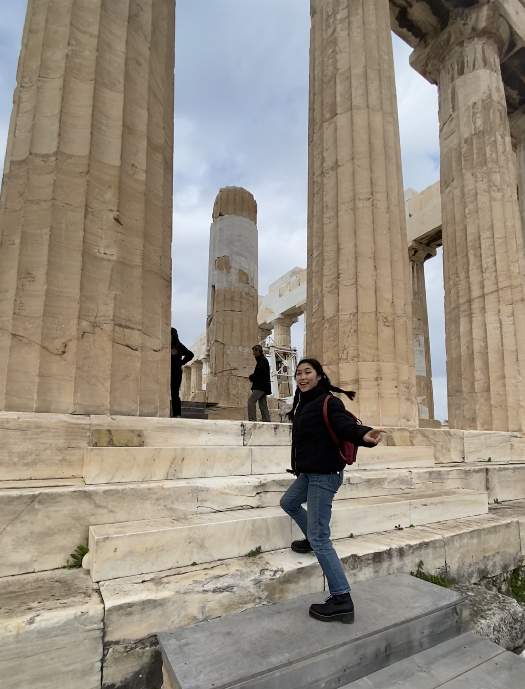

Classics, Ancient History
I studied Classics in college, focusing on the archaeology of Ancient Rome/Greece and the socioeconomic lived experiences of the working class. One of favorite memories is traveling to Athens as a senior and getting exclusive access to observe restoration efforts of the Parthenon, led by local University of Athens faculty.
